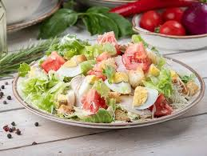

La Gust Bun
✦
Bucătărie Italiană Autentică
Salată Caesar

🥗
Ingrediente
Salată verde
Pui
Crutoane
Parmezan
Sos Caesar
👨🍳
Mod de preparare
Se spală salata
Se adaugă puiul
Se adaugă crutoanele
Se pune sosul
← Înapoi la meniu